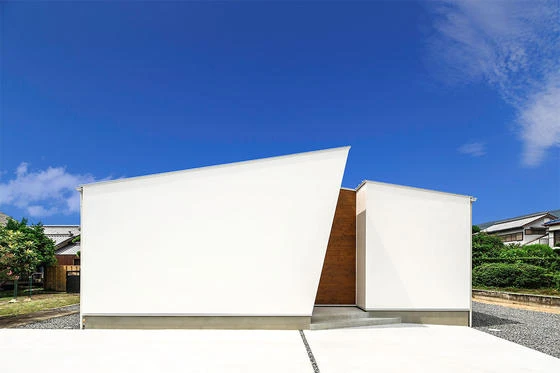

家事も楽々！回遊性のある間取りのおうち
こんにちは✨ 富山県で自然素材の家づくりをしている「フジ創」です✨ 施工事例特集をしていきます✨ パート② 「家事も楽々！回遊性のある間取りのおうち」 こちらも、弊社(フジ創)が建てた施工事例です✨ 無垢のキッチンや造作
続きを読む →FUJISOU AINOS JOURNAL
家づくりのこと、暮らしのこと。
日々の想いを、お伝えします。
施工事例 10件 ／ 新しい記事から 1・1ページ
こんにちは✨ 富山県で自然素材の家づくりをしている「フジ創」です✨ 施工事例特集をしていきます✨ パート② 「家事も楽々！回遊性のある間取りのおうち」 こちらも、弊社(フジ創)が建てた施工事例です✨ 無垢のキッチンや造作
続きを読む →
こんにちは✨ 富山県で自然素材の家づくりをしている「フジ創」です✨ 今日は、弊社の施工事例を載せていきたいと思います。 施工事例の欄にもありますが、ブログにもご紹介いたします✨ お家の題名は、、 「 安心と安全を大切に考
続きを読む →
こんにちは。富山で自然素材にこだわるホンモノの家、フジ創アイノスです。 以前より当ホームページで紹介してきた「ＳＩＭＰＬＥ ＮＯＴＥ」のおうちですが 現在、高岡市で実際に施工中のおうちがあります。 見どころポイント ・正
続きを読む →
こんにちは、富山で自然素材にこだわるホンモノの家。フジ創アイノスです。 【フジ創の建てたおうち】で紹介している施主様邸の施工事例を紹介します。 ▼木の空間演出~太陽を迎えるおうち こちらのおうちの一番のポイントは 「光」
続きを読む →こんにちは、富山で自然素材にこだわるホンモノの家。フジ創アイノスです。 【フジ創の建てたおうち】で紹介している施主様邸の施工事例を紹介します。 ▼木の空間演出~太陽を迎えるおうち こちらのおうちの一番のポイントは 「光」
続きを読む →
こんにちは、富山で自然素材にこだわるホンモノの家。フジ創アイノスです。 先日はご夫婦向けの住宅のお引渡し式でした。 将来を見据えたスマートなアイデアが詰まったおうち、 よく使う場所が広々 として バリアフリー を意識した
続きを読む →
こんにちは、富山で自然素材にこだわるホンモノの家。フジ創アイノスです。 【同じ自然素材でも考え方の違いでこんなに変わる】 フジ創アイノスでは、 １２月１４日、１５日 の二日間、 施主様協力のもと、 富山市 で 二棟同時完
続きを読む →
こんにちは、富山で自然素材にこだわるホンモノの家。フジ創アイノスです。 【二日間限定開催】 今月１４、１５日富山市で開催予定。 「幸せづくり見学会」で公開させていただく施主様邸を見学してきました。 今回は蓮町Ｎ様邸。「北
続きを読む →こんにちは、富山で自然素材にこだわるホンモノの家。フジ創アイノスです。 【同じ自然素材でも考え方の違いでこんなに変わる】 フジ創アイノスでは、 １２月１４日、１５日 の二日間、 施主様協力のもと、 富山市 で 二棟同時完
続きを読む →
富山で自然素材にこだわるホンモノの家。フジ創アイノスです １０月５日、射水市Ｏ様邸 さわやかな潮風のにおい漂う街の一角 天気も晴天に恵まれ、青空の下 柱や梁が組み立てられてゆきました ------------------
続きを読む →